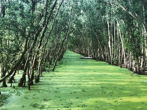

Những cánh rừng nguyên sinh còn lại ở Việt Nam là ngôi nhà của nhiều loài động thực vật quý hiếm đang bị đe dọa, từ voi châu Á cho đến những loài có nguy cơ tuyệt chủng cao như Sao la.
Hàng năm vẫn có những loài mới được phát hiện trong những cánh rừng của Việt Nam, như cóc núi Elfin và thằn lằn cá sấu.
Tuy nhiên, theo Giám sát Rừng Toàn cầu (Global Forest Watch – GFW), từ năm 2001 đến năm 2018, Việt Nam đã mất đi hơn 2.6 triệu héc-ta rừng, tương đương với giảm 16% diện tích rừng so với năm 2000.
Những cánh rừng Việt Nam đang phải đối mặt với nhiều nguy cơ. Xuất khẩu gỗ của Việt Nam đang bùng nổ, tăng trưởng gấp đôi với kim ngạch đạt 9 tỉ đô-la Mỹ trong giai đoạn 2012-2018. Mặc dù tạo thêm được việc làm và cải thiện cuộc sống của hàng nghìn chủ hộ rừng lớn nhỏ cùng các cộng đồng địa phương, ngành công nghiệp chế biến gỗ ở Việt Nam đã ảnh hưởng rõ rệt đến việc quản lý và bảo vệ rừng không chỉ đối với Việt Nam, mà còn đối với các quốc gia láng giềng như Lào và Campuchia. Thêm vào đó, sự phát triển của nông nghiệp cũng đe dọa các khu rừng nguyên sinh bên trong và xung quanh các khu vực bảo tồn, phá hủy sinh cảnh quan trọng của các loài
hoang dã và làm suy thoái giá trị các hệ sinh thái quý giá của chúng ta như nước ngọt và không khí sạch.
WWF đang nỗ lực tạo ra sự cân bằng hài hòa giữa bảo tồn và phục hồi các hệ sinh thái rừng và sự đa dạng sinh học của chúng,
đồng thời vẫn đảm bảo sinh kế và phát triển kinh tế - xã hội một cách bền vững. Chiến lược của WWF-Việt Nam bao gồm:
Giảm tác động của ngành lâm nghiệp Việt Nam lên tới môi trường ở cả trong nước và trên toàn cầu;
Các khu bảo tồn tại Trung Trường Sơn được bảo vệ hoặc quản lý tốt hơn;
Mở rộng diện tích các khu bảo tồn và đảm bảo công tác bảo tồn được thực hiện hiệu quả;
Bảo tồn rừng phòng hộ đầu nguồn thông qua các kế hoạch quản lý rừng bền vững;
Gia tăng số lượng rừng được quản lý tốt bằng cách áp dụng các phương thức sản xuất và quản lý rừng theo chứng chỉ quốc tế;
Khuyến khích thêm nhiều cộng đồng tham gia vào quản lý và bảo vệ rừng bền vững để cải thiện sinh kế tại địa phương dựa trên các cơ chế tài chính bền vững;
Phục hồi các hành lang rừng quan trọng và các khu vực bị phân mảnh;
Duy trì tỷ lệ mất rừng tự nhiên dưới 0.3%;
Tiếp tục tìm kiếm những chiến lược can thiệp mang tính đột phá để tăng cường bảo vệ rừng và bảo tồn đa dạng sinh học.
Áp dụng phương pháp tiếp cận cảnh quan sẽ giúp đánh giá đầy đủ nhu cầu của tất cả các nhóm đối tượng có liên quan đến sức khỏe của rừng. Phương pháp này có sự tham gia của toàn bộ các bên tham gia trong cảnh quan ưu tiên, bao gồm chính phủ, đối tác tư nhân, cộng đồng địa phương và các tổ chức dân sự xã hội. Hợp tác cùng nhau sẽ giúp chúng ta xây dựng được những giải pháp không những phù hợp cho tất cả các bên mà còn đảm bảo đạt được nhiều kết quả tích cực trong hoạt động bảo tồn tại những khu vực quan trọng
nhất về sinh thái của Việt Nam cho các thế hệ hiện tại và tương lai. Tìm hiểu thêm về diễn đàn Giải pháp Rừng

Bộ trưởng tài nguyên
Đánh giá cao sự đóng góp của WWF-Việt Nam trong việc hỗ trợ xây dựng luật, Bộ trưởng Bộ Tài nguyên và Môi trường đã gửi thư cảm ơn và trao bằng khen tôn vinh WWF-Việt Nam vì “Đã có thành tích xuất sắc trong xây dựng Luật Bảo vệ Môi trường năm 2020, góp phần vào xây dựng và phát triển ngành Tài nguyên và Môi trường”.
Đây là một sự ghi nhận dành cho những nỗ lực không ngừng của WWF-Việt Nam trong việc hỗ trợ xây dựng Luật Bảo vệ Môi trường 2020, bao gồm: Hỗ trợ tổ chức các hội thảo tham vấn về dự thảo luật, và Tích cực tham gia các hoạt động tham luận, đóng góp ý kiến, đề xuất các biện pháp quản lý môi trường và tài nguyên hiệu quả, tiếp cận xu thế toàn cầu trong các lĩnh vực: quản lý chất thải rắn sinh hoạt nói chung, chất thải/ô nhiễm nhựa và bao bì nói riêng; mở rộng trách nhiệm của doanh nghiệp với sản phẩm đến giai đoạn sau tiêu dùng; quản lý và quy hoạch cảnh quan; biến đổi khí hậu; quản lý hiệu quả nguồn tài nguyên thiên nhiên, đa dạng sinh học. Đây cũng là một thành tựu quan trọng đối với WWF-Việt Nam, phản ánh nỗ lực không ngừng trong việc mang lại một Thỏa thuận mới cho Thiên nhiên và Con người tại Việt Nam thông qua các cam kết từ cấp chính phủ.
WWF-Viet Nam vui mừng chia sẻ sự ghi nhận này của Bộ Tài nguyên và Môi trường với sự tri ân đến các chuyên gia và đối tác đã tích cực hỗ trợ và đồng hành với WWF-Việt Nam trong năm 2020 trong công cuộc hỗ trợ Chính phủ Việt Nam trong việc tham gia đóng góp, tư vấn, chia sẻ các kinh nghiệm quốc tế để từ đó chúng tôi đã có thể tổng hợp, chắt lọc các thông tin và chia sẻ với phía Việt Nam.
Với sứ mệnh là ngăn chặn suy thoái môi trường tự nhiên của trái đất và xây dựng một tương lai, nơi đó con người sống hòa hợp với thiên nhiên, WWF cam kết sẽ tiếp tục hỗ trợ Chính phủ trong các hoạt động bảo vệ môi trường và quản lý tài nguyên thiên nhiên hiệu quả tại Việt Nam.